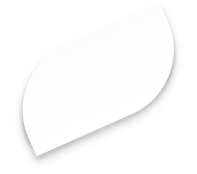

ДЛЯ КОГО ЭТОТ КУРС:

Вы хотите получить новую специальность
Вы начинающий психолог и вам нужна практика
Вы хотите расширить и углубить свои профессиональные навыки
Вы хотите получить инструменты для помощи себе и своим близким